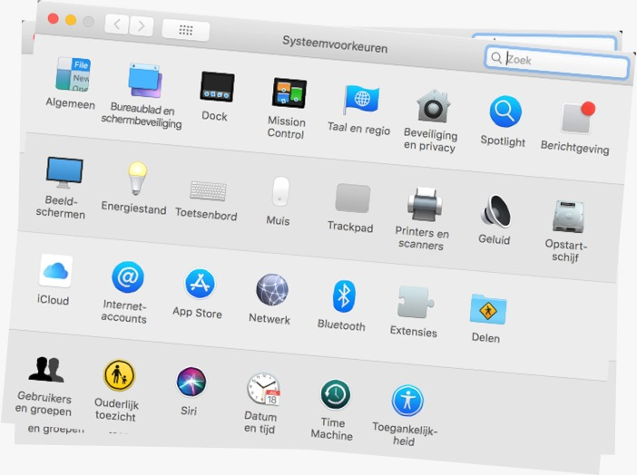

Product Interface
Product Interface verwijst naar informatie ontwerp waar grafische beelden informatie en feedback geven over de te verrichten handelingen door gebruik van woorden en/of symbolen. Typische toepassingen van Product Inferface zijn: user product inferface (analoog) en user inferface (digitaal)


Diagrammatic
Schematische vormen bij informatie ontwerp zijn die waarbij redelijk nauwkeurige cijfers gedurende een bepaalde periode worden vastgelegd en verzameld. Over het algemeen gestructureerd op een x- en y-as. Typische toepassingen van Diagrammatic Information Design zijn: graph, table, bar chart, pie chart en timeline. De meeste van deze toepassingen zijn in het leven geroepen door William Playfair (1759).